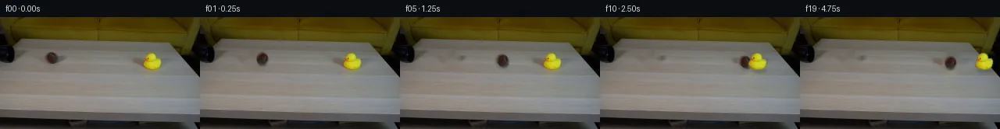

![首帧]()

Round 00
2026-11-04T19:25:48.057818+00:00像素候选变化代码 +192/−0inspection 更新
pixels d38af93b35aacc37 · code ecca2c3ea458a364
查看本轮 generate.py 真实 diff
--- previous/generate.py +++ current/generate.py @@ -0,0 +1,192 @@ +from pathlib import Path + +import cv2 +import numpy as np +from PIL import Image, ImageDraw, ImageFont + +from artifact_io import save + + +ROOT = Path(__file__).resolve().parent +W, H = 256, 144 + + +def inpaint_region(image, mask, radius=3): + """OpenCV inpainting, with explicit RGB/BGR conversion.""" + bgr = cv2.cvtColor(image, cv2.COLOR_RGB2BGR) + repaired = cv2.inpaint(bgr, mask, radius, cv2.INPAINT_TELEA) + return cv2.cvtColor(repaired, cv2.COLOR_BGR2RGB) + + +def soft_ellipse_alpha(height, width, center, radii, feather=1.2): + yy, xx = np.mgrid[:height, :width] + cx, cy = center + rx, ry = radii + distance = np.sqrt(((xx - cx) / rx) ** 2 + ((yy - cy) / ry) ** 2) + # Convert the requested pixel feather to an approximate normalized width. + width_n = feather / min(rx, ry) + return np.clip((1.0 + width_n - distance) / width_n, 0.0, 1.0).astype(np.float32) + + +def extract_duck(source): + """Extract the high-chroma duck, filling its tiny dark eye into the silhouette.""" + x0, y0, x1, y1 = 179, 42, 211, 73 + crop = source[y0:y1, x0:x1].copy() + spread = crop.max(axis=2).astype(np.int16) - crop.min(axis=2).astype(np.int16) + seed = ((spread > 48) & (crop[:, :, 2] < 145)).astype(np.uint8) * 255 + seed = cv2.morphologyEx(seed, cv2.MORPH_CLOSE, np.ones((3, 3), np.uint8)) + contours, _ = cv2.findContours(seed, cv2.RETR_EXTERNAL, cv2.CHAIN_APPROX_SIMPLE) + silhouette = np.zeros_like(seed) + contour = max(contours, key=cv2.contourArea) + cv2.drawContours(silhouette, [contour], -1, 255, thickness=-1) + silhouette = cv2.GaussianBlur(silhouette, (0, 0), 0.65) + return crop, silhouette.astype(np.float32) / 255.0 + + +def rotate_sprite(rgb, alpha, angle_degrees): + """Rotate premultiplied RGB and alpha about the sprite center.""" + h, w = alpha.shape + matrix = cv2.getRotationMatrix2D(((w - 1) / 2.0, (h - 1) / 2.0), angle_degrees, 1.0) + premult = rgb.astype(np.float32) * alpha[:, :, None] + warped_premult = cv2.warpAffine( + premult, matrix, (w, h), flags=cv2.INTER_CUBIC, + borderMode=cv2.BORDER_CONSTANT, borderValue=(0, 0, 0) + ) + warped_alpha = cv2.warpAffine( + alpha, matrix, (w, h), flags=cv2.INTER_CUBIC, + borderMode=cv2.BORDER_CONSTANT, borderValue=0 + ) + return warped_premult, np.clip(warped_alpha, 0.0, 1.0) + + +def composite_premult(canvas, premult, alpha, top_left): + """Composite a premultiplied sprite, clipping safely at the frame edge.""" + x, y = top_left + sh, sw = alpha.shape + x0, y0 = max(0, x), max(0, y) + x1, y1 = min(W, x + sw), min(H, y + sh) + if x0 >= x1 or y0 >= y1: + return + sx0, sy0 = x0 - x, y0 - y + sx1, sy1 = sx0 + (x1 - x0), sy0 + (y1 - y0) + a = alpha[sy0:sy1, sx0:sx1, None] + fg = premult[sy0:sy1, sx0:sx1] + bg = canvas[y0:y1, x0:x1].astype(np.float32) + canvas[y0:y1, x0:x1] = np.clip(fg + bg * (1.0 - a), 0, 255).astype(np.uint8) + + +def add_shadow(canvas, center, radii, opacity, sigma): + """Darken the table with a small blurred contact shadow.""" + layer = np.zeros((H, W), np.float32) + cx, cy = center + cv2.ellipse(layer, (int(round(cx)), int(round(cy))), radii, 0, 0, 360, opacity, -1) + layer = cv2.GaussianBlur(layer, (0, 0), sigma) + canvas[:] = np.clip(canvas.astype(np.float32) * (1.0 - layer[:, :, None]), 0, 255).astype(np.uint8) + + +def make_transition_check(frames): … diff truncated; 105 more lines …